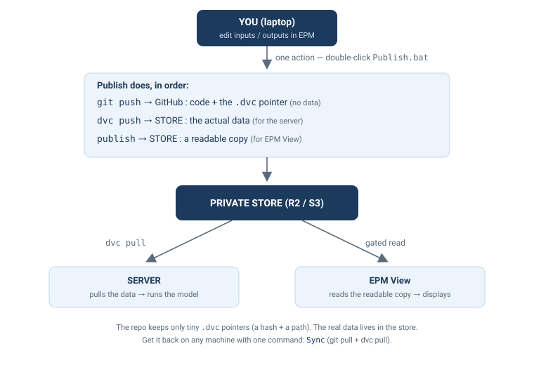

Publishing & Syncing Data (DVC)¶
EPM code is public, but the data (input CSVs, results) is kept in a private
store — not in this public repository. The repo only keeps tiny pointer files
(*.dvc); the real data lives in the store and is fetched on demand.
This page is a step-by-step guide: install once, then publish your data and get it back on any machine (your laptop, the server). No prior knowledge of DVC is assumed.
Prototype
The store is currently a Cloudflare R2 bucket (test data). For confidential data, the production store will be the World Bank S3 — same workflow, different endpoint.
The idea in one picture¶

What is DVC? Think "git for data". A large CSV is replaced in git by a 6-line pointer
(pVREProfile.csv.dvc = a hash + a path, no values). The real file lives in the store
and is moved with dvc push / dvc pull. So git stays light, and the data stays private.
1. Set up your machine (once)¶
You work in your clone of the EPM repo — the same folder you run EPM from.
New to the command line? — how to open a terminal (read me first)
A few steps below are commands you type in a terminal opened inside your EPM folder. To open one:
- Easiest — in VS Code: open your EPM folder in VS Code, then menu Terminal → New Terminal. A panel opens at the bottom, already pointing at your EPM folder.
- Or — in Windows: open your EPM folder in File Explorer, click the address bar at
the top, type
powershell, and press Enter. A blue window opens in that folder.
Then paste a command and press Enter. On Windows this terminal is PowerShell.
(Day-to-day, publishing and syncing are just double-clicks — Publish.bat / Sync.bat
— no terminal needed.)
Your Python environment is ready — just add the data tools:
Installs DVC,s3fs, and (on Windows) pip-system-certs.
Then (both cases) add your store keys — once:
- Copy the template:
tools/.env.example→tools/.env - Open
tools/.envand paste the 4 values (ask the store admin):
Never commit your keys
tools/.env is git-ignored on purpose (this repo is public). Only the empty
tools/.env.example is committed.
That's it — the store URL/endpoint is already in the repo (.dvc/config).
2. Is your model already on the store?¶
- Look in
epm/input/. If you see a pointer file likedata_<model>.dvc(and the data folder is git-ignored) → your model is already migrated. Skip to step 4 (Publish). - If the data folder is still committed in git (no
.dvcpointer) → your model is not yet migrated. Do step 3 first (once per model).
3. Onboard a new model (once per model)¶
This moves a model's data out of git into the store. Do it once, by whoever sets the model up; afterwards everyone just uses setup + publish/sync.
It's one command:
- Open a terminal in your EPM folder (see the "how to open a terminal" tip in step 1).
- If you use conda, activate your EPM environment:
conda activate <your-epm-env>. -
Run the command below, replacing
data_sappwith your data folder name: -
It prints a short summary, then asks
Continue? (y/N)— typeyto proceed, orNto cancel. Nothing changes until you typey(safe to just look).
Then review (git status) and publish (double-click Publish.bat). Finally, to make
EPM View show this model, add its branch name to R2_BRANCHES in src/utils/epmFetch.js
of the epm-data-explorer repo.
What setup_model.ps1 does under the hood (the manual steps)
The script automates exactly these — your files stay on disk, and it commits/pushes nothing (you review, then publish):
# 1. Initialise DVC for the repo (once per repo)
dvc init
# 2. Point DVC at the store (once — already set in this repo's .dvc/config)
dvc remote add -d store s3://<bucket>/dvcstore
dvc remote modify store endpointurl <endpoint>
# 3. .gitignore: drop the whitelist of the data folder, keep its pointer tracked
# !epm/input/data_<model>.dvc
# 4. Stop tracking the data in git (files stay), then hand the folder to DVC
git rm -r --cached epm/input/data_<model>
dvc add epm/input/data_<model> # creates the .dvc pointer
4. Publish your data¶
Whenever you change inputs (or want to show new results), publish in one action:
Publishing does four things, in order — note it uses both git and DVC:
| Step | Command | What it sends, and where |
|---|---|---|
| 1 | dvc add |
re-hashes your changed data → updates the small .dvc pointer (local only) |
| 2 | git commit + push |
sends the pointer (a tiny text file) to GitHub — yes, a real git commit on your branch |
| 3 | dvc push |
uploads the actual data to the store (so the server can pull it) |
| 4 | upload | copies a readable version (inputs + epm/output_view/) to the store (for EPM View) |
So your code and pointer go to GitHub (git); the data goes to the store (DVC + the readable copy). The data itself never goes to GitHub.
Showing results in EPM View
Copy the runs you want to display into
epm/output_view/<run>/<scenario>/output_csv/ before publishing (only .csv files
are sent). epm/output_view/ is a local staging folder (git-ignored).
5. Get the data back (any machine / the server)¶
This runs git pull (code + pointers) then dvc pull (data from the store) — then you can
run the model with up-to-date data.
First sync after a model is migrated
git pull briefly empties the data folder (the data has left git) — this is normal.
dvc pull, run right after by Sync, restores it from the store. Nothing is lost.
Troubleshooting¶
Unable to locate credentials→ keys not loaded. On the server, eitherexport AWS_ACCESS_KEY_ID=… AWS_SECRET_ACCESS_KEY=…, or set them once withdvc remote modify --local store access_key_id …(stays in git-ignoredconfig.local).CERTIFICATE_VERIFY_FAILED/ SSL (corporate laptop) → a TLS proxy is intercepting.pip-system-certs(installed byrequirements.txton Windows) fixes it by trusting the OS certificate store. If it persists, try off-VPN. The AWS server is not affected.dvccommand not found (server) → usepython -m dvc …, or add~/.local/binto yourPATH.
Files (in tools/)¶
| File | Role |
|---|---|
publish.ps1 |
engine behind Publish.bat |
sync.ps1 / sync.sh |
get code + data (Windows / server) |
setup_model.ps1 |
onboard a new model's data to the store (one-time, step 3) |
upload_to_r2.py, upload_output_view_to_r2.py |
upload the readable copies |
.env.example |
keys template (copy to .env, git-ignored) |